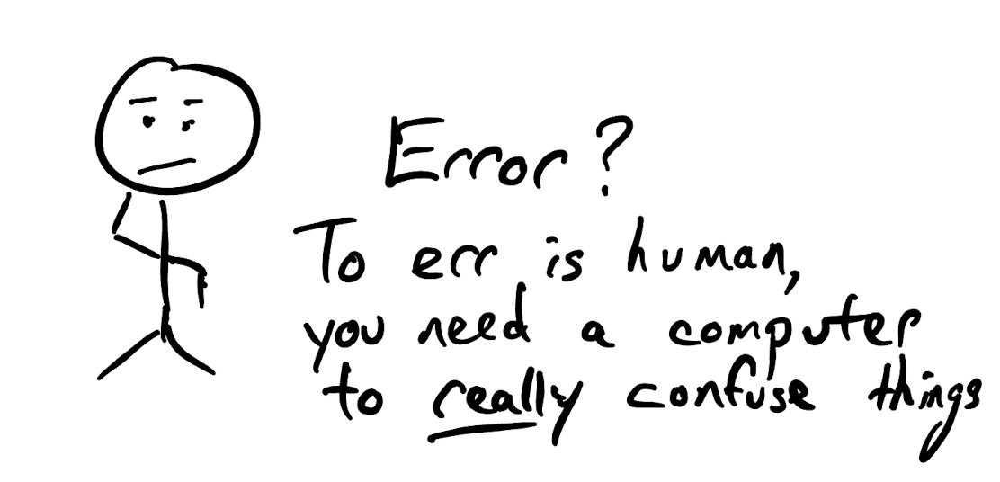

Python Errors
Contents
Python Errors#
(adapted from CHEM 1000 - Spring 2023 Prof. Geoffrey Hutchison, University of Pittsburgh)
No matter how good you become as a programmer, you will make errors. That’s of course part of being human. It also means that when we learn coding, we make mistakes. Unfortunately, it can take some work to translate from a Python error message into “how do I fix the problem.”
{kind=link}
We will see some examples of common errors and how to fix them. This list is hardly comprehensive, so please ask if you run into an error – we can add them to the list.
Eventually, we will be able to use Python 3.10 and later, which include better error messages with more specific suggestions.
Learning Objectives
By the end of this recitation / notebook, you should be able to:
See examples of common Python errors
Better understand Python error messages
Attribution
Parts of this have been adapted from material from Software Carpentry.
Types of errors#
The two most common kinds of errors are:
Syntax errors (the code is not correct Python syntax)
Runtime errors (the code starts to run but has a problem)
We’ll look at a few examples of each.
Generally when Python finds an error or “exception” it will also print a “traceback.” The last level is the actual place where the error occurred, with the offending line indicated. This should be where the problematic code is, although in some cases, the traceback can get confused and the error is somewhere else.
Newer versions of Python are improving the error messages, but aren’t widely available.
Even so, it’s really helpful to know how to translate error messages into human language. 😉
Syntax Errors#
There are a few sub-categories of syntax errors, but most of these are some form of typo.
When you forget a colon at the end of a line, accidentally add one space too many when indenting under a for loop, or forget a parenthesis, you will encounter a syntax error.
This means that Python couldn’t figure out how to read your program. This is similar to forgetting punctuation in English: for example, this text is difficult to read there is no punctuation there is also no capitalization why is this hard because you have to figure out where each sentence ends you also have to figure out where each sentence begins to some extent it might be ambiguous if there should be a sentence break or not
People can typically figure out what is meant by text with no punctuation, but people are much smarter than computers (for now at least). If Python doesn’t know how to read the program, it will give up and inform you with an error. For example:
for number in range(1, 10)
print(number)
Cell In[1], line 1
for number in range(1, 10)
^
SyntaxError: expected ':'
Notice that there’s something missing at the end of this line. Python syntax should have a : to indicate the end of the for statement, and the ^ character is showing you where it goes (but not how to fix it, necessarily).
Here’s another case:
import numpy as np
x = np.sin(3.5
y = np.cos(3.5)
Cell In[2], line 3
x = np.sin(3.5
^
SyntaxError: '(' was never closed
This error is sneaky. Notice that the error message is flagging the y = np.cos(3.5) line. But the real problem is on the line above, where there’s a missing ) at the end of the line.
If you don’t spot a problem with the line flagged in the error message, check the line above to see if you’re missing end ) or ] characters.
The latest version of Python 3.10 (which unfortunately isn’t installed yet) gives a better error message, e.g.
SyntaxError: '(' was never closed
Another class of sneaky error messages comes up with indentation:
total = 0
while total < 100:
total = total + 1
print(total)
Cell In[3], line 4
print(total)
^
IndentationError: unexpected indent
In this case, we get a specific IndentationError - a kind of Syntax Error complaining about the amount of indent used in the code.
Python uses tabs or spaces to indicate what code belongs in a loop or if / else conditional statement, etc. and what code will run after the loop.
Consequently, if you have inconsistent indendation, like above, your code will get an IndentationError.
Occasionally, if you’re pasting code from somewhere else, you might also see a TabError which is when there’s inconsistent use of tabs and spaces. (Like maybe one line uses tabs, and another line uses spaces.) In that case, just go through and re-type the indents and you’ll be okay. (Some people have holy wars over tabs versus spaces. Ignore them.)
Name Errors#
Another kind of typo-induced error is a NameError. Technically speaking, these are runtime errors, because the syntax is correct, but the code won’t run. There are a few of these:
import numy as np # there is no "numy" module
---------------------------------------------------------------------------
ModuleNotFoundError Traceback (most recent call last)
Cell In[4], line 1
----> 1 import numy as np
ModuleNotFoundError: No module named 'numy'
These will show up as either ImportError or ModuleNoteFoundError but they’re fundamentally a typo. I can’t count the number of times I’ve typed “numy” or “nupy” or “nunpy” because I’m typing too fast.
Similarly:
for number in range(10):
count = count + number
print("The total is ", count)
---------------------------------------------------------------------------
NameError Traceback (most recent call last)
Cell In[5], line 2
1 for number in range(10):
----> 2 count = count + number
3 print("The total is ", count)
NameError: name 'count' is not defined
This NameError is telling us that we’re using a variable we didn’t define. (We should define it before we use it in the loop:
count = 0
Count = 0
for number in range(10):
count = count + number
print("The total is ", count)
---------------------------------------------------------------------------
NameError Traceback (most recent call last)
Cell In[6], line 3
1 Count = 0
2 for number in range(10):
----> 3 count = count + number
4 print("The total is ", count)
NameError: name 'count' is not defined
Wait, I defined it! Oh, I used a captial Count instead of lowercase count. Ugh.
print(hello)
---------------------------------------------------------------------------
NameError Traceback (most recent call last)
Cell In[7], line 1
----> 1 print(hello)
NameError: name 'hello' is not defined
In this case, we probably mean:
print("hello")
(Incidentally, it doesn’t matter if you use single quotes ’ or double quotes ” around strings, as long as you match them at the start and end.)
Runtime Errors#
Many of these still “feel” like syntax errors, but they’re usually more subtle. It’s less obvious what the problem is, and they usually take more work to translate from an error message into English.
letters = ['a', 'b', 'c']
print('Letter #1 is', letters[0])
print('Letter #2 is', letters[1])
print('Letter #3 is', letters[2])
print('Letter #4 is', letters[3])
Letter #1 is a
Letter #2 is b
Letter #3 is c
---------------------------------------------------------------------------
IndexError Traceback (most recent call last)
Cell In[8], line 5
3 print('Letter #2 is', letters[1])
4 print('Letter #3 is', letters[2])
----> 5 print('Letter #4 is', letters[3])
IndexError: list index out of range
Why is that a problem? A frequent issue is with off-by-one errors because Python and many programming languages start lists at item 0. So we ask for letter[3] because we want the 3rd letter, but we should ask for letter[2].
Python gets annoyed at us, because [3] is not in the list of letters. It would like me suggesting “Caturday” as a day to meet up. It doesn’t exist.
heights = [ 1.7, 1.8, 1.9, 2.0, 1.8 ]
heights = 74 / 39.3701
total = 0
for height in heights:
total = total + height
print("Total: ", total)
---------------------------------------------------------------------------
TypeError Traceback (most recent call last)
Cell In[9], line 4
2 heights = 74 / 39.3701
3 total = 0
----> 4 for height in heights:
5 total = total + height
6 print("Total: ", total)
TypeError: 'float' object is not iterable
Notice that while the error is flagged in the for loop, the problem is actually in line 2, where we assign a float number (74 / 39.3701) over a list.
The TypeError is telling us that heights is not a list anymore, so we can’t iterate (loop) over it aka not iterable.
mixing_strings = 'hello' + 55
---------------------------------------------------------------------------
TypeError Traceback (most recent call last)
Cell In[10], line 1
----> 1 mixing_strings = 'hello' + 55
TypeError: can only concatenate str (not "int") to str
Python is fairly flexible about “types” of variables, but thou shall not mix strings and numbers. It’s hard for the code to know what you want. Adding numbers is easy. Adding together strings is easy. It’s much harder to know what this code (or similar code) is supposed to do.
If you want to assemble a string with a number in it, there are ways to do that, including the str() function, which turns a number into string or float() which will attempt to convert a string into a floating-point number.
More Errors#
I’ve listed most of the common errors that students encounter. Undoubtedly you’ll run into more throughout the semester. That’s part of learning a programming language. If you hit an error you don’t understand, please submit a screenshot to Piazza and we’ll work through it.
I’ll work to add other common errors (and explanations) to this notebook in the future.
This notebook is adapted from Prof. Geoffrey Hutchison, University of Pittsburgh https://github.com/ghutchis/chem1000
Portions have been adapted from Software Carpentry - Scientific Python Basics and Mathematical Python by Patrick Wills